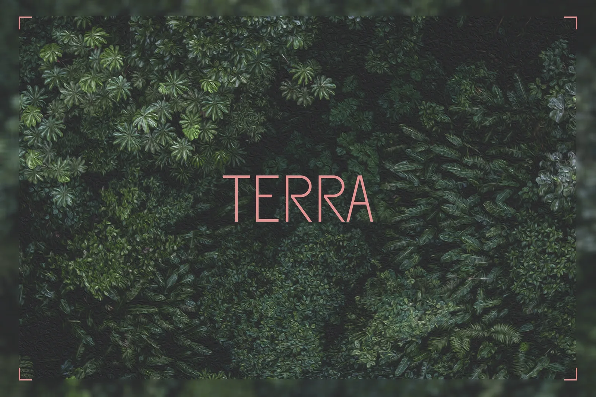
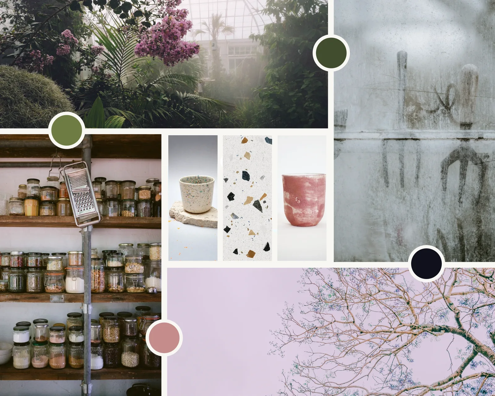
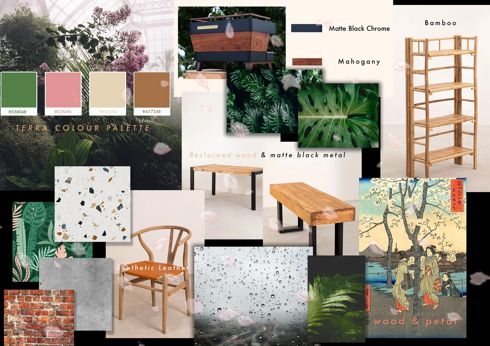
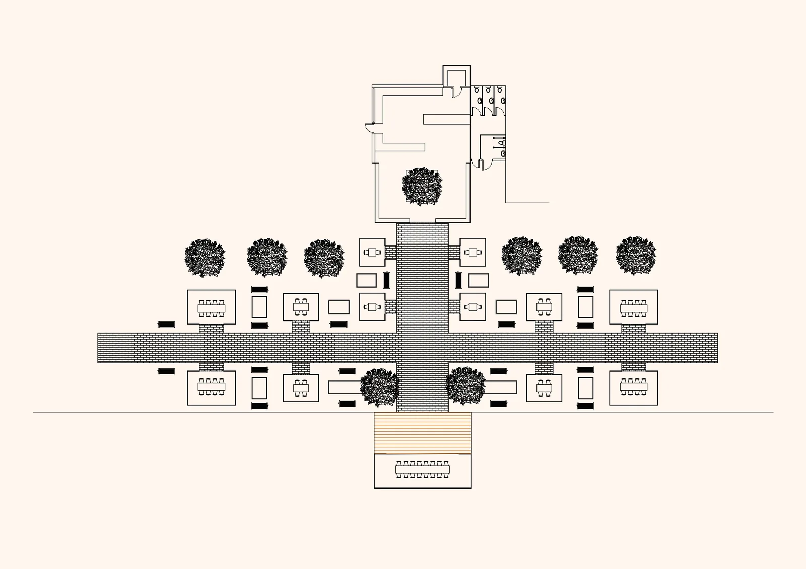
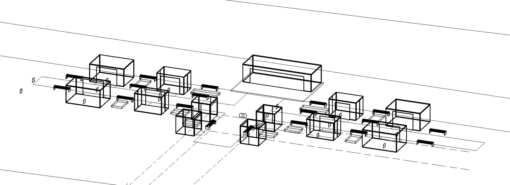
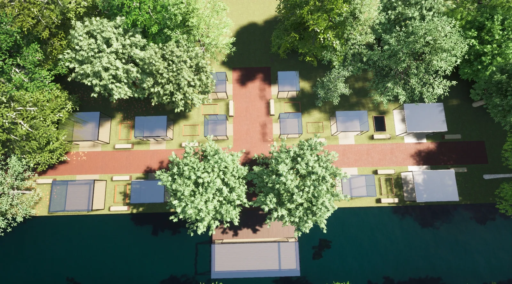

Terra at Fitzgerald Park
A café, concept store and productive garden designed as a small ecosystem.
Concept
Terra reimagines the café at Fitzgerald Park as a café, concept store and productive garden organised around the logic of a terrarium. Rather than treating the park as scenery, the proposal connects food, water, planting, retail and gathering in a small circular system. Rainwater is collected from the greenhouse roof, vegetable beds supply ingredients where practical, and café waste returns to the landscape through composting.
A glass greenhouse extends the existing building around a central sakura tree, combining café seating with a curated range of indoor-growing products. Outside, glazed dining pods for groups of different sizes sit among planting and maintain views toward the river. Their separation also responds to the project's 2021 pandemic context without making distancing feel clinical.
The café is designed to stay active beyond daytime service. Movable seating and a large pod beside the dock support talks, performances, pop-ups and community events. Salvaged brick, reclaimed timber, polished concrete and extensive glazing connect the scheme to the park while keeping the materials durable and practical.
- Location
- Cork, Ireland
- Year
- 2021
- Type
- Interior Architecture · Hospitality · Public Space
- Status
- Academic concept





Have a place, programme or experience to improve?
Explore design consultancy